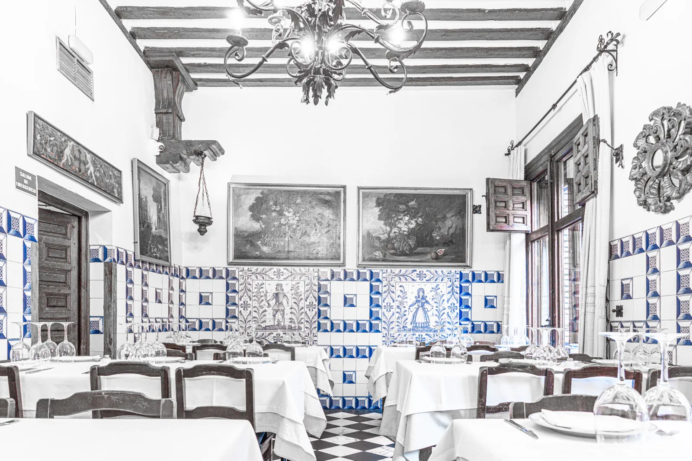
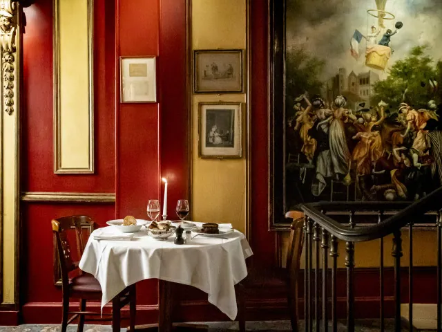
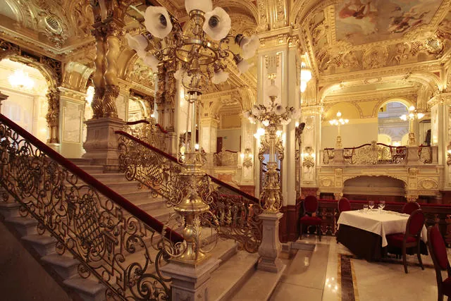
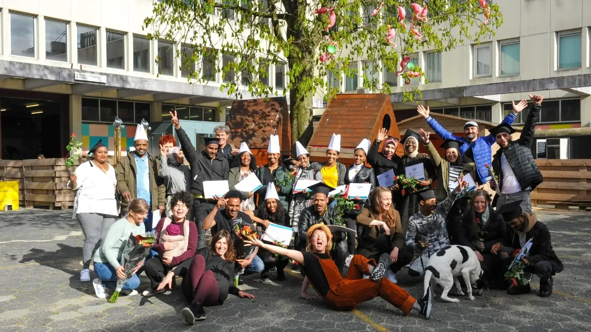

1198
Since 1725, one wood oven in a basement on Calle Cuchilleros has never been extinguished — not through Spain's civil war, not through COVID lockdown.
The Guinness Book confirms it: Sobrino de Botín is the oldest continuously operating restaurant on Earth.[18] A Frenchman named Jean Botín opened it in 1725; the same fire that roasted suckling pig under the Bourbon kings still roasts it today.[19] Ernest Hemingway closed The Sun Also Rises on its cochinillo asado — "We lunched upstairs at Botín's. It is one of the best restaurants in the world."[20]
Castilian roasts · €€€ · Calle Cuchilleros 17, Madrid · Book weeks ahead

The founding year is the story — the thread unbroken through wars, empires, and pandemics
Where the page and the plate converged — writers worked, plotted, and drank at these same tables

Montparnasse haunt of Baudelaire, Verlaine, Picasso, and the Lost Generation. Hemingway wrote part of A Moveable Feast here; his name is engraved in brass on his bar table.[5] Sit at the bar, not the pricier dining room.
Serving Tuscan fare since 1865, steps from the Uffizi. Wednesday nights drew De Chirico, Morandi and Carena — the avant-garde's regular table.[34]
Named for a Yeats poem and its actual twisting staircase. A beloved 1970s–80s writers' bookshop revived as a restaurant in 2006, serving seasonal Irish produce above a still-running bookshop overlooking the Ha'penny Bridge.[17]
Patent-filing moments of the kitchen — origin stories with actual plaques
Opened 1921 by Eugénie Brazier — the first chef to hold six Michelin stars simultaneously (1933). Paul Bocuse trained in this kitchen. Mathieu Viannay revived it in 2008.[6] The cradle of the mères lyonnaises tradition.
Paul Bocuse's family flagship since 1924 — home of the truffle soup V.G.E., created for the Élysée Palace in 1975 as an enduring symbol of French haute cuisine.[7] Order the soup that defined a generation of chefs.
Architecture and spectacle as the primary reason — these rooms are the event

Claims a 1582 founding on Quai de la Tournelle. Its theatrical pressed-duck ceremony began in 1890 — every duck numbered; now past 1.19 million — served over Seine and Notre-Dame views.[3] Book far ahead; the ceremony IS the point.
Open since 1722 in Gamla Stan, Guinness-listed as second-oldest restaurant with unchanged surroundings. Artist Anders Zorn bought and saved it in 1919 and willed it to the Swedish Academy, which still dines here weekly when awarding the Nobel Prize in Literature.[40]
Opened 1894, dubbed "the most beautiful café in the world" — a Belle-Époque palace of frescoes and gilding, hub of Hungarian literary life where Molnár wrote The Paul Street Boys.[52] Now inside the Anantara New York Palace hotel; premium pricing applies.
A Belle-Époque palace built inside Gare de Lyon for the 1900 Universal Exposition — classified a Historic Monument, 41 painted frescoes, gilt ceilings and all. Chanel, Dalí and Bardot dined beneath them.[4]
An Art Nouveau Belle-Époque brasserie open since 1903 by the Bourse — stained glass, curved wood, protected historical monument since 2000.[45] Beer and mussels under one of Belgium's finest pub interiors.
Rites practiced continuously — not revived, not recreated, never interrupted
A working sidrería whose press farmhouse dates to 1526, six generations of the Otano-Goikoetxea family since 1890.[23] On the txotx call, everyone rushes to pour straight from the barrel — a tradition that has dwindled from ~800 cider houses to barely 100.[24] Fixed menu: cod omelette, txuleta, Idiazabal. In Astigarraga, a short hop from the city.
Not a meal — pure heritage: Lisbon's first ginjinha seller, opened 1840 just off Rossio, five family generations on, now a designated Loja com História.[27] A shot of sour cherry liqueur, standing at the bar. Two minutes; one of the best things you'll do in Lisbon.
New chapters for old cities — and one story that is entirely new

Founded 1757 down a Dickensian City alley — reputedly the "melancholy tavern" Scrooge visits in A Christmas Carol.[10] ⚠ Forced shut 2022; the Cloth team reopens it mid-2026 as Cloth Cornhill — a story still unfolding.
A hospitality social enterprise by Refugee Company that trains and employs people with a refugee background — Queen Máxima opened its newest branch at Booking.com's Amsterdam HQ, creating space for 425 trainees over five years.[43][44] The newest story on this list, and the only one still in its first chapter.